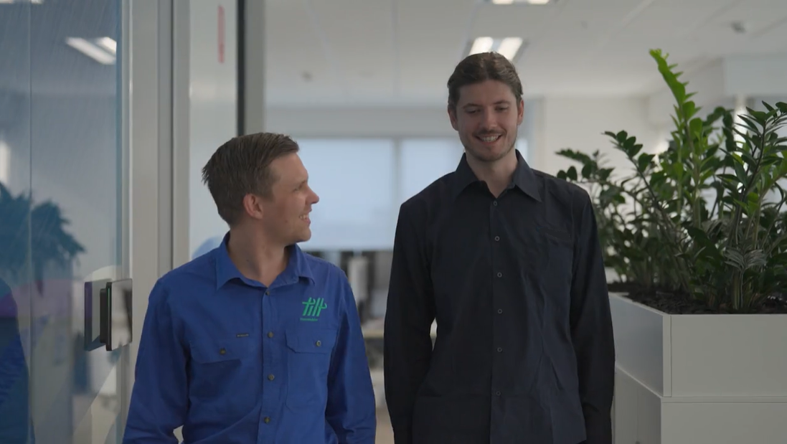
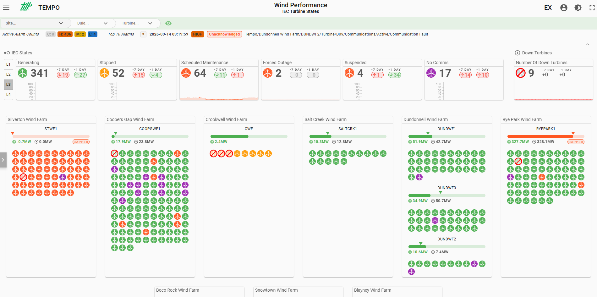
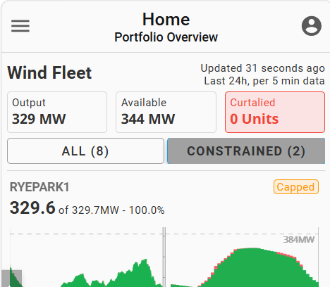
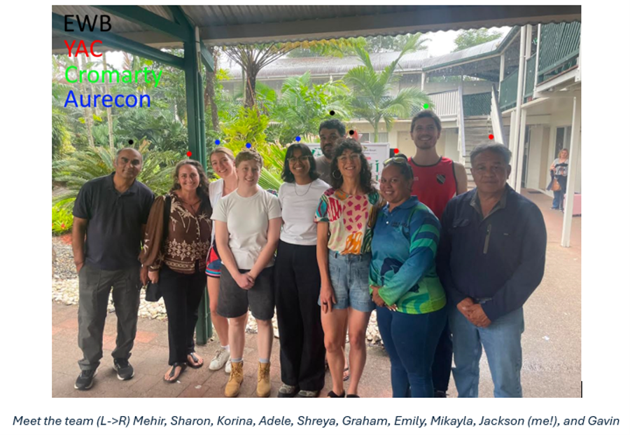
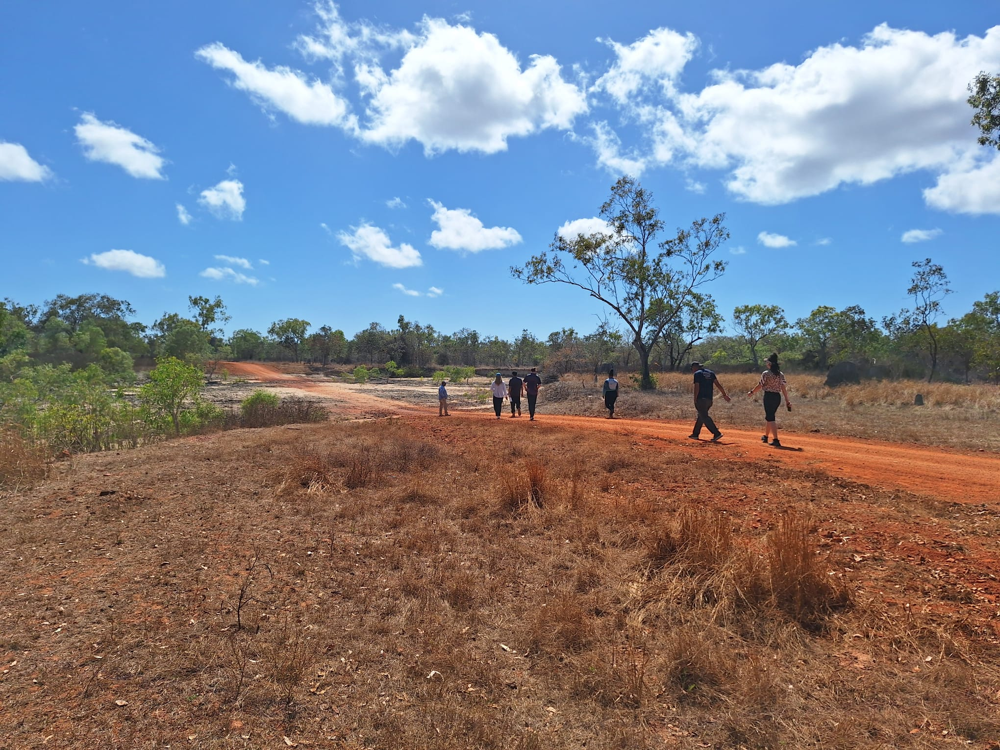

FIELD LOG — J.O
Software engineer, renewables
I build the systems that let asset managers see what their turbines, inverters and rangers are actually doing. I go out and see it firsthand when I can. Two entries from the last twelve months below.

Thats me (on the right)!entry 01 / production system
Tilt Renewables AM Solution, built on Ignition
Tilt Renewables runs wind and solar assets across the NEM through a small asset-management team that has to stay an "educated customer", not a maintenance crew. Before TEMPO, that meant separate SaaS logins per vendor, VPNs into individual SCADA systems, and no shared language between Vestas, GE and Suzlon status codes.
We normalized OEM status codes into one tag structure, historized time-series data at the edge and pushed it up to a centralized Ignition backend and Databricks. The interesting design problem wasn't the data pipeline — it was navigation. With hundreds to thousands of possible views across the asset hierarchy, we made the view itself database-driven, so new sites roll out without touching the project.
TEMPO was built to be extensible, not finished — capacity/availability calculations per turbine are next in the pipeline.

Hub-and-spoke edge deployment, wind + solar sites
Database-driven navigation, asset hierarchyentry 02 / field immersion
Lama Lama Country to Coen, sponsored trip
An EWB immersive is meant to teach city-based engineers what "designing for community need" actually requires. Mine mostly taught me how much of that phrase I'd been getting wrong.
Pre-work with Yintjingga Aboriginal Corporation, then an Aboriginal-led mangrove tour outside Cairns — history of the land, and how the tribe's access to it was dismantled.
The real basis for the whole immersive: a failed water-supply solution and a failing renewable energy install. Cost of living is crushing, diesel generators cost ~$450/week to run out here.
Had the kids build bridges from playground scavenge, rated to hold three water bottles. One held the equivalent of 58.

The team, Lama Lama Country
Dirt roads, far north QLD